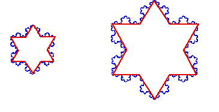

| The reason for choosing the length scale to be a fraction of the square root of the area of the enclosed region is illustrated in this picture. |
|  |
| The area of the right figure is four times that of the left figure. |
| The segments approximating the perimeter of the right figure are two times the length of the segments approximating the perimeter of the left figure. |
| Note both use the same number of segments. That is, N1 = N2. |